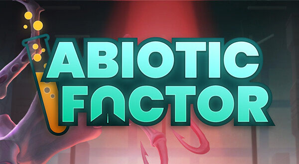
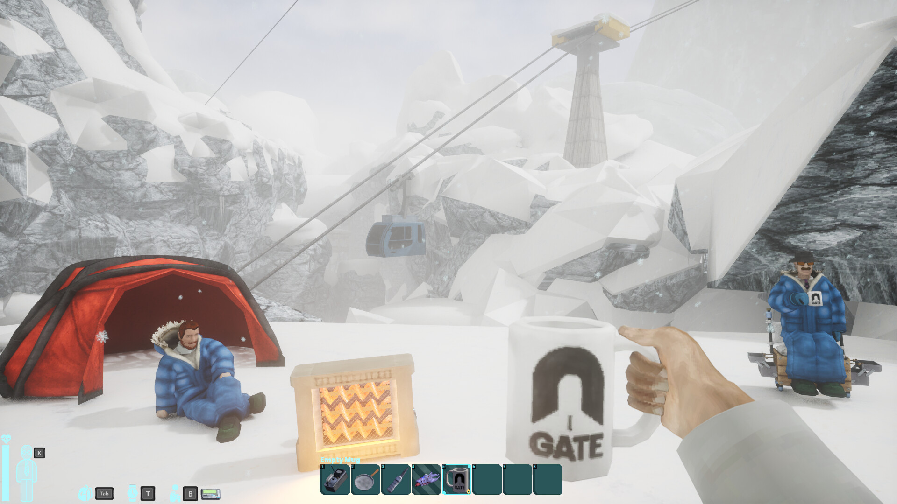
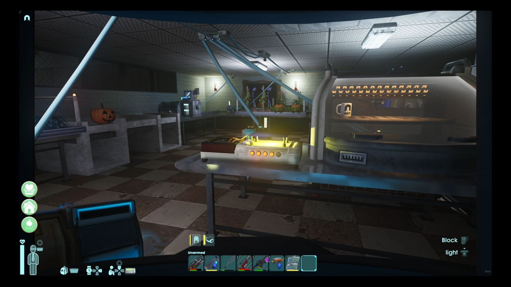
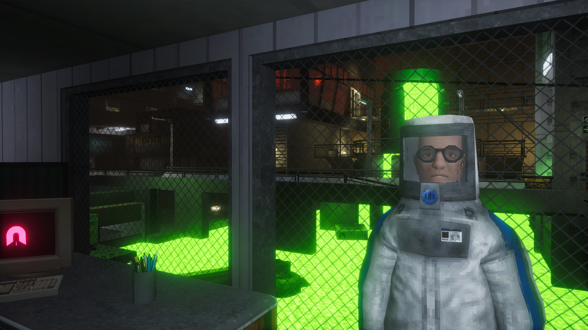

Gameplay Tips
This page will help any player that is new to the game or required help during a game.
-

Tips
This fan website will include helpful tips.
-

Reviews
You get to see what other people review.
-

About
You will learn about the game.